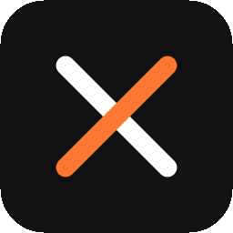

AI 结对编程桌面工作区：统一管理工作区文件、常驻终端、项目运行、检查点与多个大模型助手，一个窗口搞定日常开发。
Windows 10+ 64 位 · 免费 · MIT 开源 · 全部历史版本
多项目工作区切换，文件树、搜索与编辑一体化。
持久化终端会话，分屏渲染，断线重连不丢现场。
一键启动、日志聚合，常用命令沉淀为可复用配置。
关键节点快照，随时回滚到可工作的状态。
聚合多种 LLM 提供商，统一聊天编排与上下文管理。
知识工作流沉淀经验，Office 工具链覆盖文档场景。
JanusX-*-setup.exe
-portable.exe
正在查询最新正式版… macOS / Linux 包随后续版本加入，敬请期待。
查看更新日志与全部版本 →